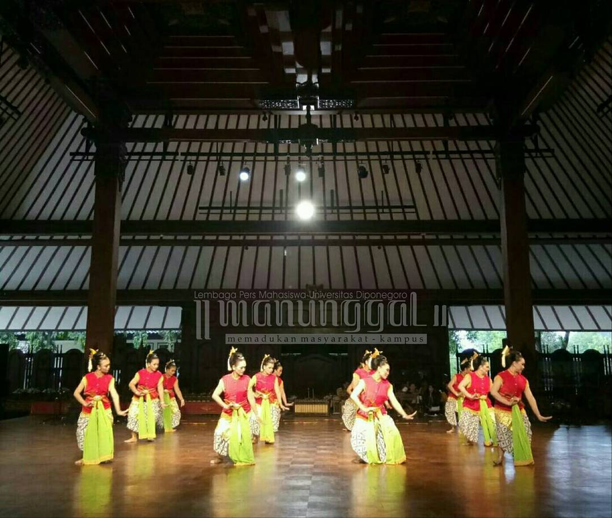

Tentang Saya
Perkenalkan saya Sisca Irin Zuliani dari kelas X PPLG 6,Saya mempunyai sifat yang ekstrovert dan senang mempelajari hal baru.
Saya lahir di Kebumen tanggal 5 Juli 2008,Alamat rumah saya di Tambaknegara RT 02 RW 01.

Hobi
Hobi saya adalah Menari karena saya dari kecil sudah suka menari dan semenjak TK saya sudah memulai hobi saya dan mengikuti banyak perlombaan

Kontak Saya
Telepon: 0857-4036-9037
Email: siscairin996@gmail.com
Instagram: siscaiirn_